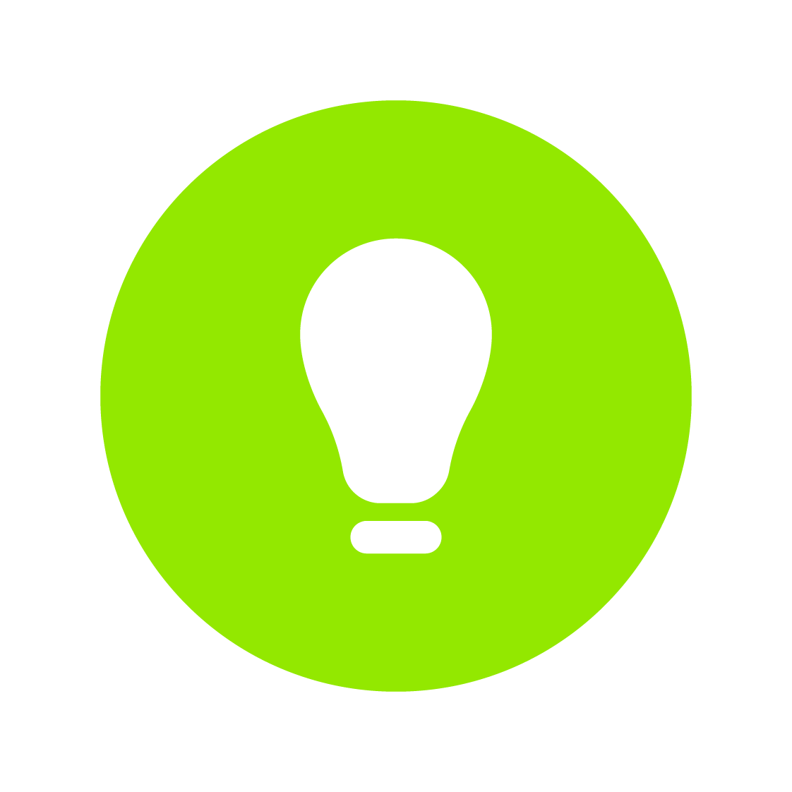

品牌标识 · 字标 / 图形标 / 组合标

设计从不始于画笔，始于提问。每一个 LOGO 动手之前，先回答三个问题：这是谁的品牌、说给谁听、凭什么被记住。市场、人群、竞品，先看清位置，再谈表达。
从品牌身上找到那一个"最"，最核心的特质、最动人的故事、最独有的事物。把它凝练成一个可被视觉化的隐喻——图形的种子在这一步埋下。
减法比加法更难。去掉解释，留下直觉；去掉复杂，留下辨识。让图形在方寸之间立得住、缩得小、记得牢。
一个 LOGO 的完成度，不在于它有多好看，而在于它能走多远——门店招牌、包装物料、小程序图标、新媒体头像，图形在每一个触点上保持统一而有生命力。
每一个，都从洞察开始，以系统结束。